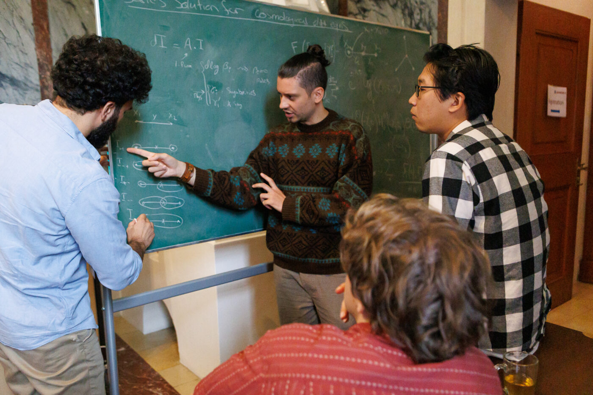
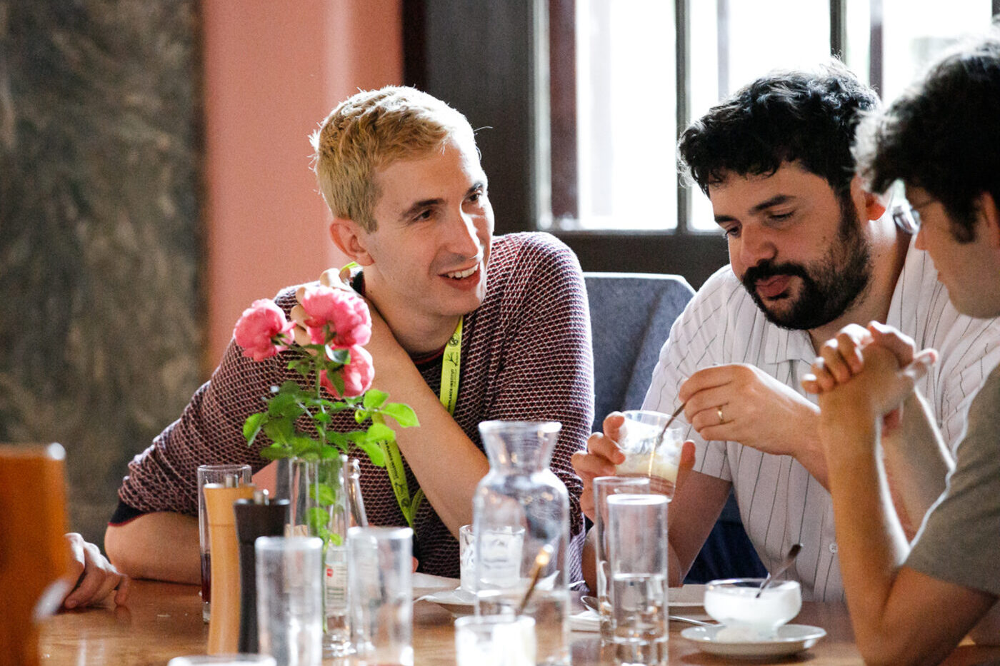
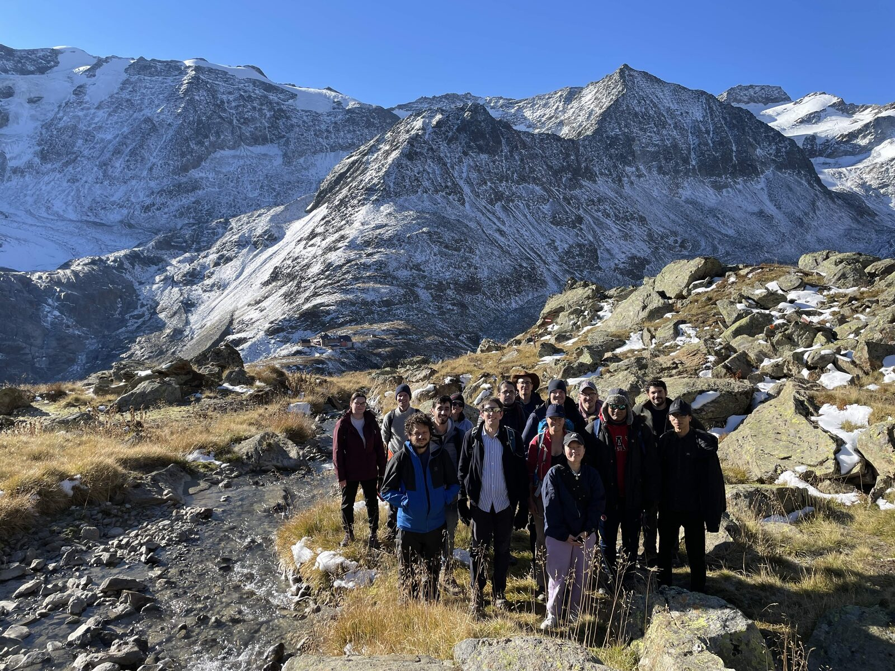

Join the group & collaborate
We welcome applications and visits at all career stages. This page explains how to get in touch — and which funding routes exist if you would like to join us with your own fellowship, with MPP as host institution.
MSc and PhD students
Before applying, please inform yourself about our research topics — on this site (see Research and For students) and via the pages of our group members. Then write me an e-mail including:
- a CV,
- a transcript of records,
- a short statement of your research interests, specifically in relation to topics pursued in our group.
PhD applications: doctoral positions are embedded in the International Max Planck Research School (IMPRS) at MPP — please also apply through the IMPRS pages. IMPRS typically has three application rounds per year — for details, consult the IMPRS website or contact the IMPRS coordinator.
Students from Latin America: consider the Hanrieder fellowship programme, which supports MSc and PhD students at MPP. Funding for international students is also available through DAAD programmes.
Postdoctoral researchers
Postdoctoral positions at MPP are advertised on the MPP website and on the usual channels (Academic Jobs Online, INSPIRE), typically once a year in the winter, for the following academic year. However, candidates are welcome to reach out at any point — also regarding the third-party funding opportunities mentioned here. We are happy to host postdoctoral fellows with their own funding: if you are interested in applying for a fellowship with MPP as host, contact me early with your CV, a brief research statement, and the fellowship you have in mind. Relevant schemes include:
- Marie Skłodowska-Curie Postdoctoral Fellowships (European Commission),
- Alexander von Humboldt Foundation fellowships.
Senior researchers, sabbaticals & collaboration
Researchers from the amplitudes community and from neighbouring fields — mathematics, cosmology, collider phenomenology — are warmly invited to discuss collaboration or research stays. What we offer is a vibrant work environment with many bright people (and of course office space): our institute is housed in a brand-new building on the Garching science campus, neighbouring other Max Planck Institutes as well as the TUM mathematics and physics departments, with plenty of scientific activities. Visits are supported by our third-party funding, including the ERC Synergy Grant UNIVERSE+ and the Max Planck–IAS–NTU Center. Typical durations range from a few days to several months. Senior researchers may also consider applying for an ERC grant (or a similar national grant) with MPP as host organization. Just get in touch — either with me (henn AT mpp.mpg.de) or with our scientific coordinator, Dr. Diana López-Falcón (dlf AT mpp.mpg.de).
Group life
Science thrives on exchange. Beyond the daily seminars and discussions at MPP, we organize regular retreats at Schloss Ringberg at Lake Tegernsee, mountain hikes, and international workshops.


